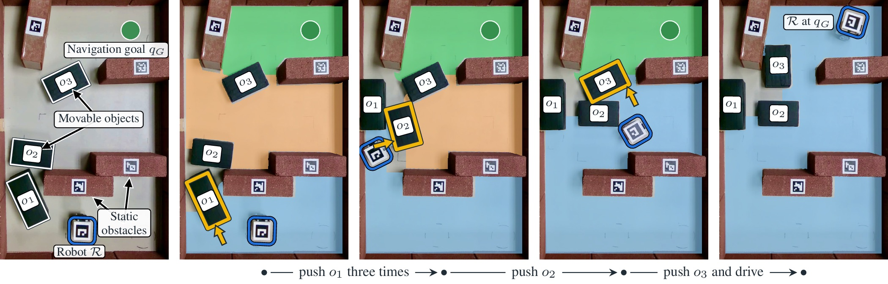
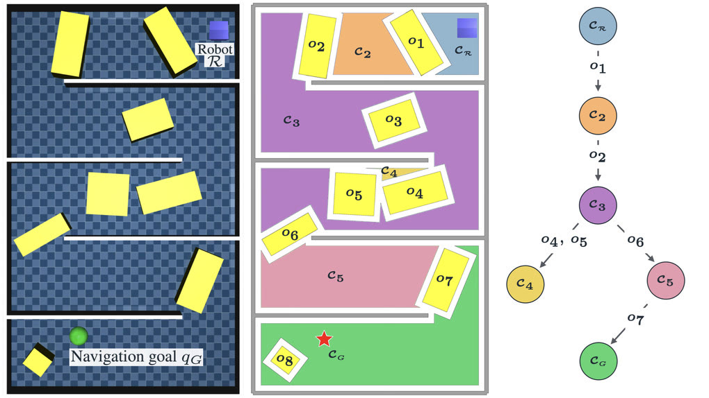
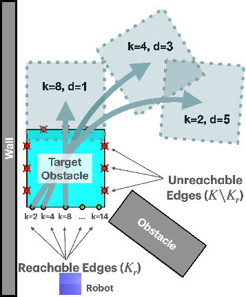
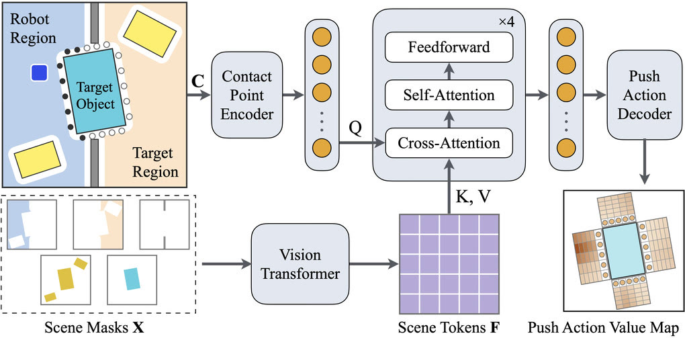

Anonymous submission · ICRA 2027
Anonymized project page for double-blind reviewSPAR ranks push actions using outcomes of simulated search, so the planner reaches a push that opens a blocked passage with fewer simulator calls. The same ranker also runs as a policy that selects pushes on the robot without simulating them.

Navigation Among Movable Obstacles (NAMO) requires a robot to rearrange objects that block access to its goal. For a pushing robot, progress may depend on a setup push that enables a later opening without itself clearing a passage. The number of candidate sequences can grow exponentially with sequence length, making physics-based search costly.
We introduce the Search-trained Push Action Ranker (SPAR), which learns to prioritize push primitives from simulated search outcomes. Searches over sequences of up to two pushes per object provide supervision that distinguishes immediate openings from setup pushes. A transformer trained with regression and ranking losses scores primitives using contact tokens conditioned on scene geometry and reachability regions. The same model guides simulator evaluations in SPAR Search and selects actions for direct execution in SPAR Policy. Both modes solve successive keyhole problems that open access to neighboring free-space regions within a NAMO planner.
Across successful runs on 300 simulated two-push keyhole problems, SPAR Search reduces median simulator calls by 7.0×, leading to a 3.8× reduction in planning time relative to Random Search. Without retraining, the same ranker guides search on 600 keyhole problems which have no solution within two pushes. At a depth limit of five pushes, SPAR Search achieves 50.7% success within 100 simulator calls, compared with 20.2% for Random Search. These gains carry over to NAMO planning: on hard simulated scenes, SPAR Search achieves 47% success within 100 simulator calls, compared with 21% for Random Search. In real-robot experiments, SPAR Policy succeeds in 37/40 trials without a physics-based digital twin, compared with 33/40 for SPAR Search and 27/40 for Random Search.
SPAR decides which push to try first. It learns that ordering from the outcomes of simulated search, and the same ranker then drives either a search or a policy.
Free space splits into regions separated by movable objects. A keyhole problem asks the robot to push the objects between its current region and a neighboring target region until it can reach that region. Solving keyhole problems one after another along the region graph makes the goal reachable.

Each push is a primitive: a contact point k on one face of an object and a push duration d. With K = 15 contacts per face and D = 5 durations, each object has 4KD = 300 primitives. The robot can only use contacts it can reach.
Search keeps one queue of candidate pushes across states. Each simulator call executes the candidate with the highest priority, and search stops once the robot can reach at least 20% of up to 100 reference points sampled in the target region. The priority function sets how many simulator calls this takes. That ordering is what SPAR learns.

For each training scene, breadth-first search tries every sequence of up to two pushes on a blocking object in simulation. Each first push gets a label:
Training combines regression on these labels with ranking losses that place openings above setup pushes, and setup pushes above everything else.

The model sees a crop centered on the object, with five channels: static obstacles, movable objects, the selected object, and the robot and target regions. A vision transformer turns the crop into scene tokens. Each contact point becomes a token that attends to the scene and to the other contacts, and a shared decoder scores every duration at that contact. One forward pass scores all primitives for the object.
The scores order the search queue. Search builds a plan to the goal in simulation before the robot moves. On the robot, it checks the rest of the plan after each push and replans when needed.
The robot executes the highest-scoring reachable push, observes the result, and scores again. It commits to each outcome and keeps no alternatives.
Eight scenes, five trials per method. Each clip plays one trial of Random Search, SPAR Search and SPAR Policy side by side, at the same playback speed in all three panels. A panel marked Failed shows a run that did not reach the goal within 5 cm. Clip lengths reflect recording time only: robot speed varies with battery level, so the paper reports success, pushes and simulator calls rather than duration.
| Scene | Random Search | SPAR Search | SPAR Policy | |||||
|---|---|---|---|---|---|---|---|---|
| Succ. | Pushes | Sim calls | Succ. | Pushes | Sim calls | Succ. | Pushes | |
| A | 5/5 | 4 | 114 | 5/5 | 3 | 7 | 5/5 | 3 |
| B | 5/5 | 1 | 9 | 5/5 | 1 | 3 | 5/5 | 1 |
| C | 1/5 | 2 | 212 | 2/5 | 2.5 | 249 | 3/5 | 3 |
| D | 1/5 | 7 | 791 | 5/5 | 4 | 115 | 5/5 | 4 |
| E | 2/5 | 2 | 480.5 | 5/5 | 2 | 28 | 5/5 | 2 |
| F | 5/5 | 4 | 38 | 5/5 | 3 | 9 | 5/5 | 5 |
| G | 5/5 | 6 | 189 | 2/5 | 4 | 14 | 5/5 | 7 |
| H | 3/5 | 6 | 34 | 4/5 | 5 | 48.5 | 4/5 | 6 |
| Total | 27/40 | 33/40 | 37/40 | |||||
SPAR Policy executes the highest-ranked push and ranks the pushes again after each observation, without simulating candidate pushes. Clips play at 8×.
In scene C, Random Search succeeded in 1 of 5 trials, SPAR Search in 2 of 5, and SPAR Policy in 3 of 5. Select C under Real-robot results to see a trial in which both search methods fail.